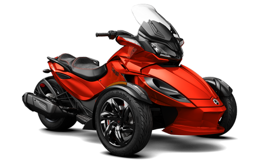

Найчастіше перед новачком стоїть вибір покупки мотоцикла. Відкривши газету і побачивши незрозумілі слова, людина, яка жодного разу не чув про це — впадає в паніку. І дійсно, достаток, і вибір мотоциклів в теперішньому часі просто шокує, я вже мовчу про майбутнє.
Розглянемо найосновніші (поширені) класи мотоциклів, а саме: кросовий, ендуро, чопер, трайк, круїзерів, спортбайк, спорт-тур (спортивно-туристичний), класик, стріт (стритфайтер).